|
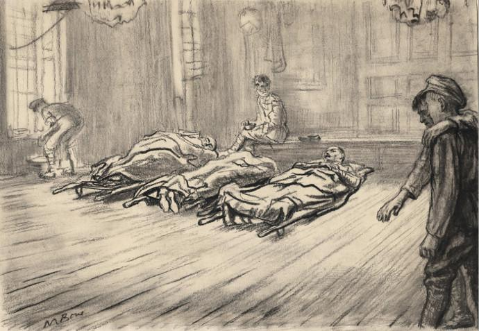 Inside the Main Dressing Station. 1st Canadian Field Ambulance (1916), by Muirhead Bone. World War I or the First World War: The name “world war” came into use shortly before the First World War and likely came from the German word “Weltkrieg,” or world war. The Great War: World War I was one of the largest wars in history. It was the first global war and it lasted over four years. 70 million combatants were involved, 10 million of whom were killed and 20 million of whom were wounded. One thing the doughboys couldn’t do much about during WWI was the weather, although Pershing soon after he arrived set up a primitive AEF weather service that monitored weather reports from as far away as Spitzbergen, Norway and Ireland. Here’s a monthly summary for August: Daily temperature: 20C/68F, Daily average temperature: High 25C, Low 16C, High 77F, Low 61F. Monthly rainfall: 21 mm in 10 days; Daily hours of sunshine: 8.
|
|
Country |
Mobilized |
Killed |
Wounded |
Total K and W |
Casualties |
|
Africa |
55,000 |
10,000 |
unknown |
unknown |
- |
|
Australia |
330,000 |
59,000 |
152,000 |
211,000 |
64% |
|
Austria-Hungary |
6,500,000 |
1,200,000 |
3,620,000 |
4,820,000 |
74% |
|
Belgium |
207,000 |
13,000 |
44,000 |
57,000 |
28% |
|
Bulgaria |
400,000 |
101,000 |
153,000 |
254,000 |
64% |
|
Canada |
620,000 |
67,000 |
173,000 |
241,000 |
39% |
|
The Caribbean |
21,000 |
1,000 |
3,000 |
4,000 |
19% |
|
French Empire |
7,500,000 |
1,385,000 |
4,266,000 |
5,651,000 |
75% |
|
Germany |
11,000,000 |
1,718,000 |
4,234,000 |
5,952,000 |
54% |
|
Great Britain |
5,397,000 |
703,000 |
1,663,000 |
2,367,000 |
44% |
|
Greece |
230,000 |
5,000 |
21,000 |
26,000 |
11% |
|
India |
1,500,000 |
43,000 |
65,000 |
108,000 |
7% |
|
Italy |
5,500,000 |
460,000 |
947,000 |
1,407,000 |
26% |
|
Japan |
800,000 |
250 |
1,000 |
1,250 |
0.2% |
|
Montenegro |
50,000 |
3,000 |
10,000 |
13,000 |
26% |
|
New Zealand |
110,000 |
18,000 |
55,000 |
73,000 |
66% |
|
Portugal |
100,000 |
7,000 |
15,000 |
22,000 |
22% |
|
Romania |
750,000 |
200,000 |
120,000 |
320,000 |
43% |
|
Russia |
12,000,000 |
1,700,000 |
4,950,000 |
6,650,000 |
55% |
|
Serbia |
707,000 |
128,000 |
133,000 |
261,000 |
37% |
|
South Africa |
149,000 |
7,000 |
12,000 |
19,000 |
13% |
|
Turkey |
1,600,000 |
336,000 |
400,000 |
736,000 |
46% |
|
USA |
4,272,500 |
117,000 |
204,000 |
321,000 |
8% |
WWI Casualities (from wiki)
Total military and civilian: over 41M, 18M deaths and 23M wounded.
9 – 11 M military killed, 5 – 6M civilians killed.
6M Allies killed, over 4M Central Powers killed.
2M died from disease, 6M went missing.
2/3s of deaths were in battle. One-third from disease or from POWs.
Highest numbers for a Central Power: 1.8M Killed, 2.03M Wounded (Germany) in combat, approx. 4% of total population for all casualties.
Highest numbers for an Allied Power: 1.6M Killed, 1.4M Wounded (France) in combat, approx. 4.4% of total population for all casualties.
53K Killed, 117K Wounded (USA) in combat, approx. 0.13% of total population for all casualties.
300 Killed, 4.6K Wounded (Japan) in combat, approx.. 0.01% of total population for all casualties. (Note: Japan had 19 total casualties in the Western Front, none in combat.
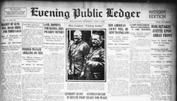
Front page of Evening Public Ledger, April 3, 1918, with General John Pershing
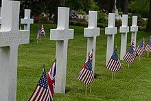
Rows of headstones line the grounds of Brookwood American Military Cemetery, United Kingdom

US soldiers run past the remains of two German soldiers toward a bunker
The General Pershing WWI casualty list was a list of casualties released to the media by the American military during World War I. Newspapers like the Evening Public Ledger would title the list's summary, General Pershing Reports or Pershing Reports. The name General Pershing refers to General John Pershing who was in command of the American Expeditionary Forces (AEF) the expeditionary force of the United States Army during World War I. While fighting the Germans on the Western Front the AEF would take daily casualties in the form of those killed in action (KIA), those who died from their wounds, those who died from disease, accidental deaths, soldiers missing in action (MIA) and soldiers wounded in action (WIA). These numbers would be tabulated by the American military and then released to the American news media. Much after the war the real numbers were mined from the military bureaucracy as opposed to the fog of war. During WWI 4,734,991 served in the American military. There were a total of 116,516 deaths with 53,402 of those in battle. Another 63,114 died in accidental deaths but around 45,000 died due to the 1918 Spanish Flu outbreak (30,000 before they even reached France). Of those that survived the war 204,002 were wounded in some way.
One of the publications that printed this data along with the names who were reported dead and wounded was the Philadelphia newspaper Evening Public Ledger. The Public Ledger was a daily newspaper in Philadelphia, Pennsylvania published from March 25, 1836 to January 1942. Its motto was "Virtue Liberty and Independence". For a time, it was Philadelphia's most popular newspaper, but circulation declined in the mid-1930s. In 1913, Cyrus H. K. Curtis purchased the paper from Ochs for $2 million ($ 49,520,000 in 2018) and hired his step son-in-law John Charles Martin as editor. Under Curtis' ownership, the conservative appearance of the Ledger was increased: it avoided bold headlines and seldom printed photographs on the front page. Its conservative format has been compared by scholars to the Wall Street Journal or New York Times of the twentieth century. Curtis built the Ledger's foreign news service and syndicated it to other papers. From 1918 to 1921, former President William Howard Taft was on staff as an editorial contributor. To broaden the market, and compete against The Evening Bulletin, in 1914 Curtis began publishing the Evening Public Ledger, a bolder paper designed to appeal to a broader public.
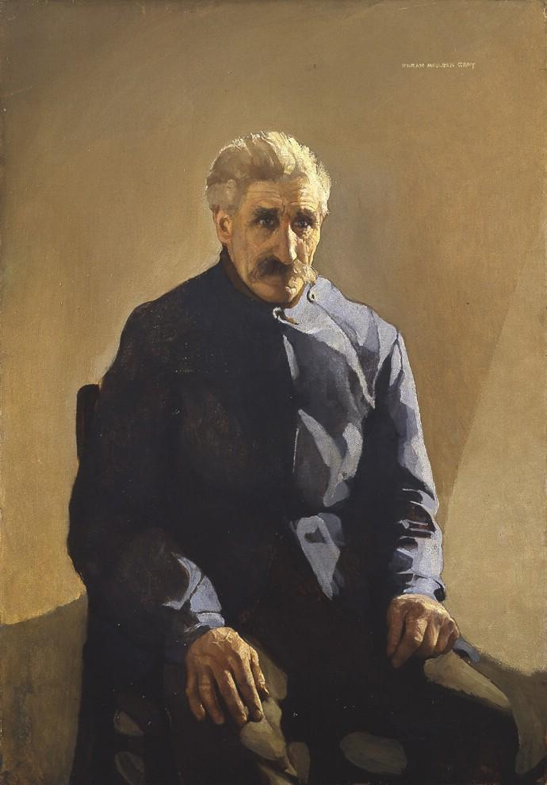
“A Belgian Refugee (1915-21)”, by Norah Nielson-Gray

Spanish flu virus mutates: Simultaneous deadlier outbreaks in Brest, Freetown and Boston.
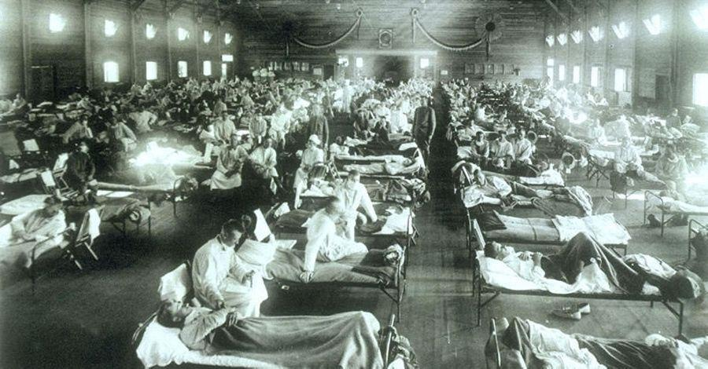
Fort Riley during 1918 influenza pandemic
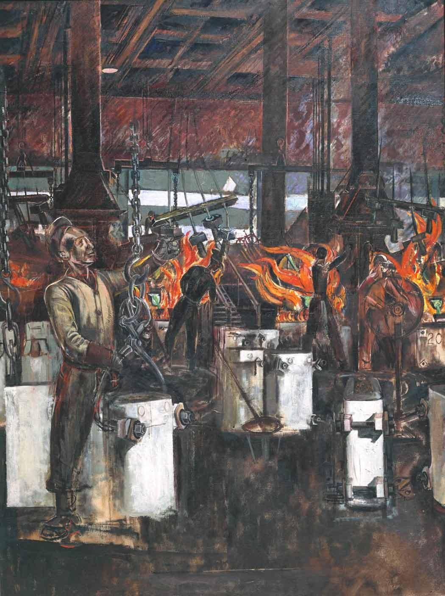
“A Canadian War Factory”, by Percy Wyndham Lewis
On the infantry-only army of the A.E.F. vs. the cavalry of Allenby’s Corps; with the tanks and aeroplanes waiting in the wings to replace both…
Patton was born in 1885, Rommel was born in 1891. The irony was that the Germans resisted the tank and its possibilities and concentrated on big guns and MGs. It was the Britsh who favored the larger tanks, the French the smaller tanks, and the US who saw their potential as the replacement to horse-drawn artillery.
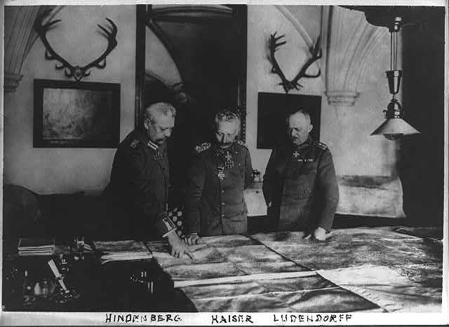
Let’s Not Forget Who the Bad Guys Were: An iconic WWI photo.
Considering its relatively short duration for the United States, WWI produced a fair share of leaders during the War who went on to important positions in WWII. Among them, president-to-be Dwight Eisenhower, already in the Army, served state-side and never joined the A.E.F. Former President Teddy Roosevelt’s request for a commission was turned down by President Wilson for a variety of reasons (mostly political) and excuses (age, health, etc.). Instead Roosevelt sent his youngest son, Quentin, who eventually rose to flag rank, was killed, awarded a Medal of Honor and is buried in Western Europe. Harry S Truman, served in the A.E.F. with the 129th Field Artillery,an artillery regiment from Missouri. Later, of course, he became president. Herbert Hoover’s invaluable war relief efforts were recognized and he later became president. Unfortunately his White House performance did not match up to his WWI record. Charles W. Dawes, was a key aide to Gen. John J. Pershing who later held positions under President Harding where he created the Dawes Plan that allowed Germany to borrow money from the United States to pay off its huge war debts to the Allies.
Virtually unknown today, Thomas Riley Marshall served as Vice President for both of Wilson’s terms in the White House. Perhaps his most important contributions were creating the filibuster rule that prevented anti-War senators from blocking needed war powers acts and helping Mrs. Wilson deal with the President’s health and governance issues after his stroke.
In 1914 the USA had a standing Army of 100,000 men and a National Guard and was outnumbered by the German Army 20:1. By the end of WWI the US armed forces included 1.3M volunteers and 3.0M draftees. That didn’t just happen. For the first year and a quarter the Army (the Navy and Marines were doing the same, but it takes longer to build a ship than a rifle) vastly expanded the number of regular Army and National Guard cantonments (e.g. forts) and mobilization camps (e.g. camps). Usually by doubling the size of existing facilities and then doubling that number again with temporary new facilities; which came in very hand when WWII and Korea rolled around. New aviation training camps and fields were built, along with plants to build ammo (seventeen, 12,000 acre ammo factories were built in rural areas of the country). New railroads, shipping terminals, etc. were built to build a 66 and possibly100 division USA. Remember, each USA division was the size of two German divisions. It was a huge and expensive process, although in today’s dollars it seems so cheap. Mistakes were made by many at all levels. Some of them are funny when we look back. The Army General Sent Pershing a shipload of typewiters were he asked for 50. He ordered 50,000 fighter planes from the French, but forgot that we didn’t have engines for them and neither did the French. The Navy decided that 14-inch guns weren’t going to work for their new battleships that would take 3 years to build, so they offered the already built (at a cost of $1 million each) gun barrels to the A.E.F. which promptly converted them into railroard transported cannon. More on that later.
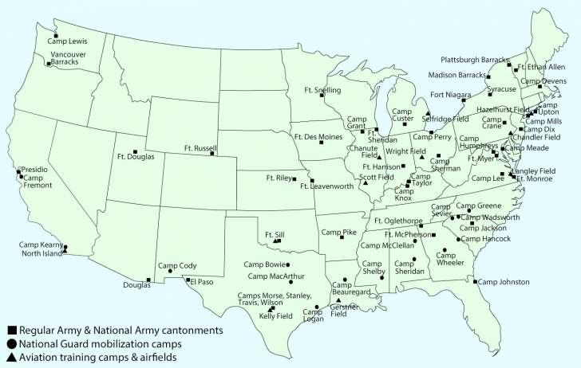
Created in 18 months to support the A.E.F.
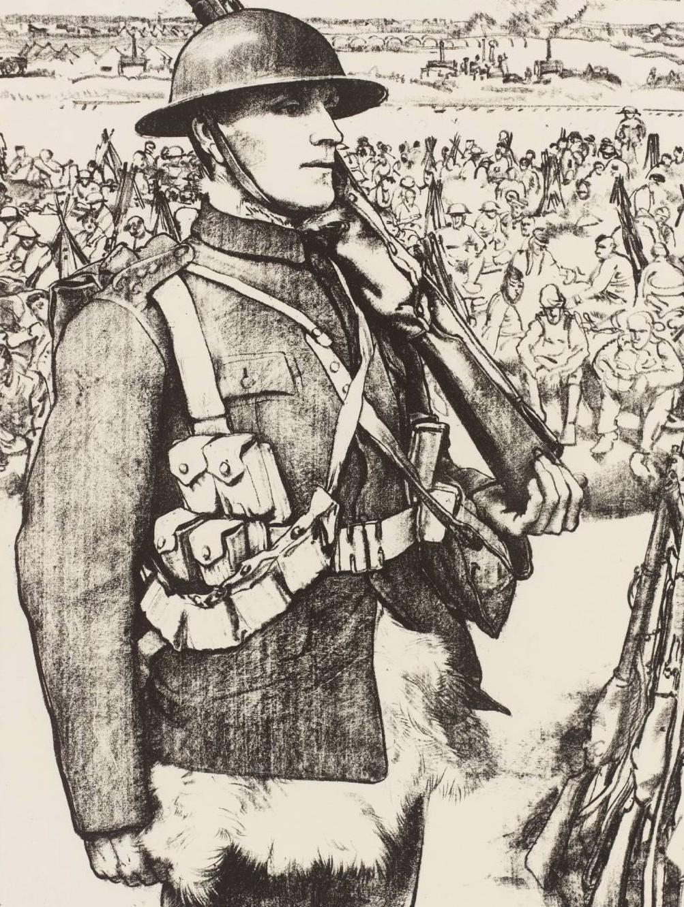
“Making Soldiers: Ready for Service”, by Norah Nielson-Gray, (1917)
The first US Army units that went with Pershing to France in 1918 formed the beginning of the A.E.F. (American Expeditionary Forces. Note the British, Belgians and most of the Allies also had similarly named units. The French, of course, still referred to their Army as an army.) and included just about all the trained and experienced (from service in the Philippines or Mexico). They barely made up a division-sized unit, including the Marines who came with them. As the chart shows the trickle of A.E.F. troops grew to a flood and peaked at over 300,000 in one summer month in 1918. It was a fantastic operation. Unfortunately, it was not an army. Most of the men arriving were barely trained and equipped. Perhsing’s first War was to build a real US Army in Western Europe. All that is beyond the scope of this project. Instead, we pick up the story in the summer of 1918 when the first large A.E.F. forces take to the field and have a major impact. And the rest, as they say, is the story of The Hundred Days.
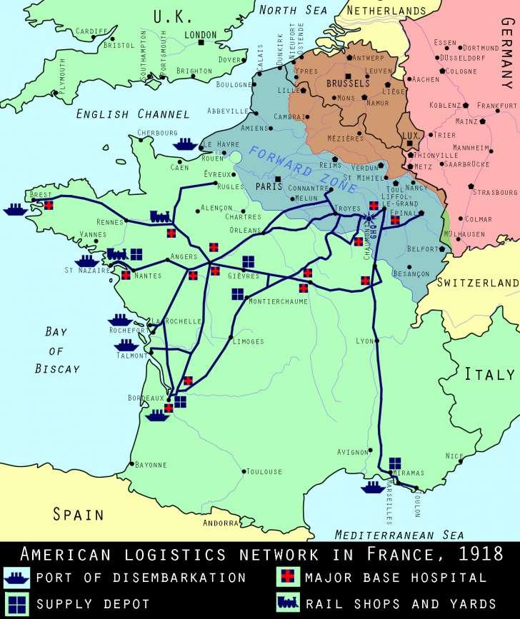
U.S. supply routes in France, World War I
A.E.F. support network in France, also created in 18 months. Pershing gets much of the credit for creating the Supply of Services organization that linked the A.E.F. in the trenches with the States, but even more of the credit should go to his chief of staff and chief purchasing officer. Without them he would not have won his first War. Even with them, he barely made it to the beginning of the end at the Second Battle of the Somme.
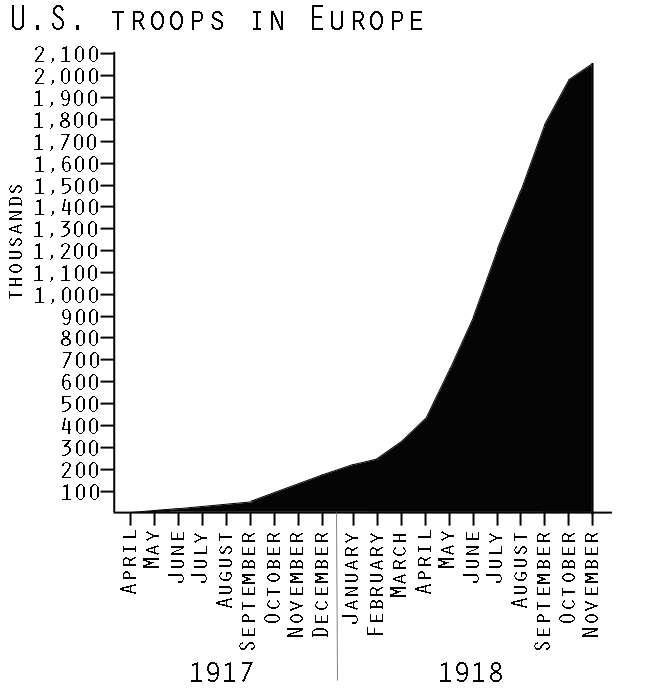
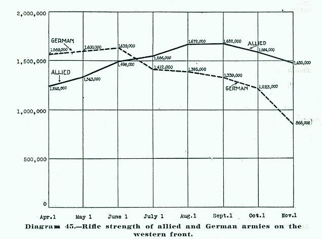
From Calais to Strasbourg is 500 km, straightline, 310 miles
From Calais to Strasbourg, 616 km. by road, about 380 miles
X 100 miles for the width of the battle front (layers of trench lines (easily 14 miles deep) and additional zones for reserves, supplies, training, etc.) so figure 100 miles
1 km equals .62 miles
38,000 sq miles (between Indiana and KY)
Traditonal provinces involved: Calais, Picardy, Champagne/Ardennes, Lorraine, Alsace
Current: Hauts du France (Calais and Picardy), and Grand Est, other three)
Hauts du France = 12,283 sq miles.Grand East, 22,275 square miles.
It is good to review these numbers because, unless you’re a WWI history buff or have actually visited the Northeast and Northwest of France, you probably don’t realize just how small that Western Front was. Altogether it was about the size of an U.S. state between the size of Indiana and Kentucky!
By and large the A.E.F. fighting on the Western Front fought in fields, forests, small hills, small rivers and streams, and the occasional village (commune) or small town. During the course of the war almost everything manmade in the battle areas was either badly damaged or completely destroyed. Still, having experienced it before, the locals who survived returned to their homes, farms and small businesses and rebuilt them --- only to go through the same thing a generation later. Keep in mind that the Germans, French and British had been fighting in this area for well over a century and knew every square inch of it. The A.E.F., on the other hand, had probably never been in France, let alone north of Paris.
For a short introduction to the A.E.F. read the wiki entry here. I also suggest Pershing’s Memoirs vol. 1 for a story on the early A.E.F. build-up.
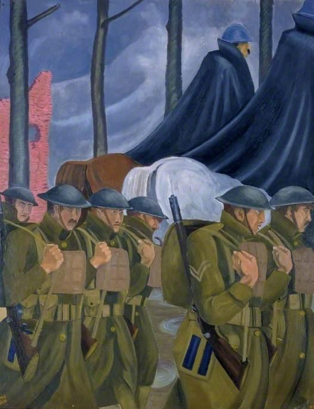
“A French Highway”, by John Northcote Nash (1893-1977), Imperial War Museum
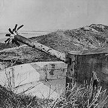
Germans in retreat, Western Front
The combined French and American attack along the Marne begun on 18 July, 1918 continues --- marking the first in a series of coordinated Allied counter-offensives on the Western Front. Three French armies accompanied by five American divisions cross the Marne River. In the face of this assault, the German 7th and 9th Armies begin a withdrawal from the Marne. Losses are heavy on both sides but the Germans are definitely on the defensive and retreating.
British force arrives at Baku (Caspian Sea) during July and early August. The Bolshevik Committee at Enzeli arrested by British military authorities.
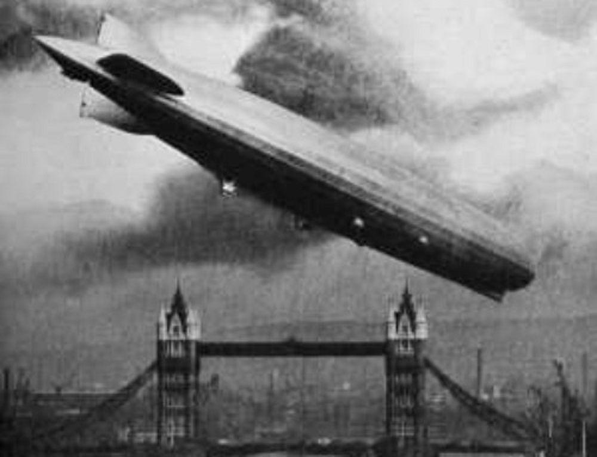
First German airship attack on London, January 1915.
The Czechoslovak People’s Army of Komuch takes Kazan from the Bolsheviks and captures the Imperial Russian gold reserve.
Last attempt to attack England with airships (unsuccessful - "L.-70" destroyed). There were altogether 51 airship raids against the British Isles during which bombs were dropped. There were also 8 attempted raids which either did not reach the coast, or which, for some other reason, failed in action. There were also 59 aeroplane attacks in which bombs were dropped, and 11 aeroplane reconnaissances. Total number of air raids in which bombs were dropped was 110.
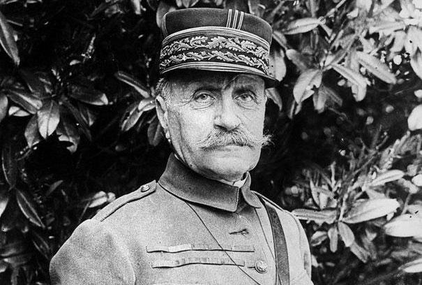
Marshal Ferdinand Foch, Supreme Commander of the Allied Forces in Europe.
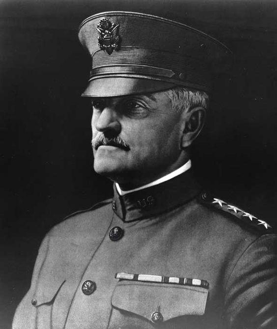
General John J. Pershing, Commanding General of the A.E.F.
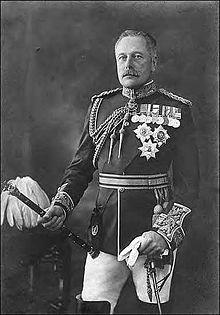
Field Marshal Douglas Haig, Commander of the British Expedition Force
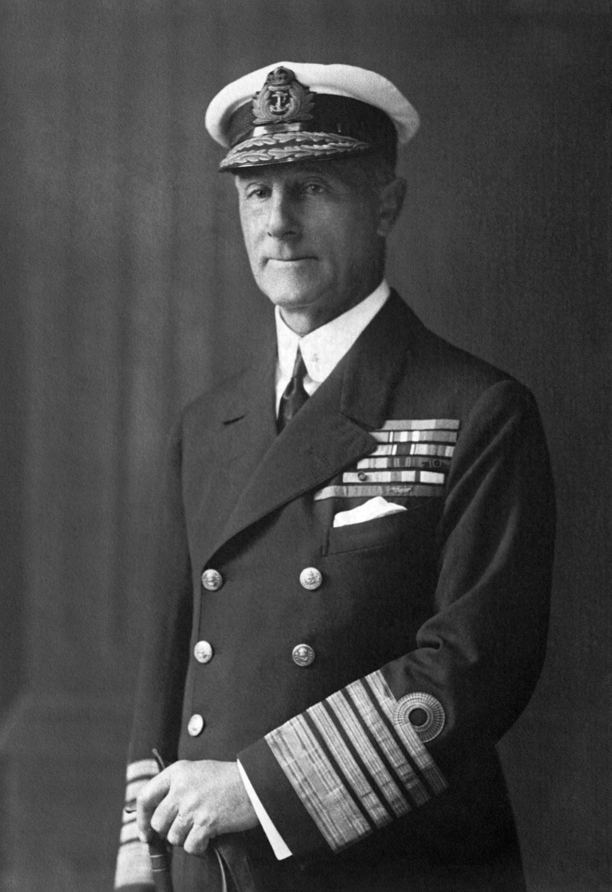
Admiral of the Fleet John Jellicoe, First Sea Lord, RN
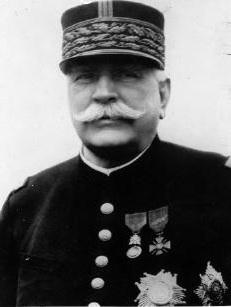
Marshal Joseph Joffre , Commander of the French Army through 1916
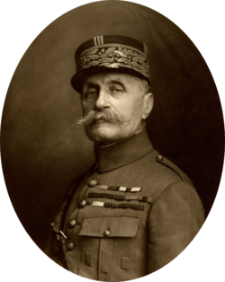
Marshal Ferdinand Foch, Supreme Commander of the Allied Forces from March, 1918
British Government issue Declaration to Russian peoples, stating that they have no intention of interfering in Russian politics.
General Foch created Marshal of France.
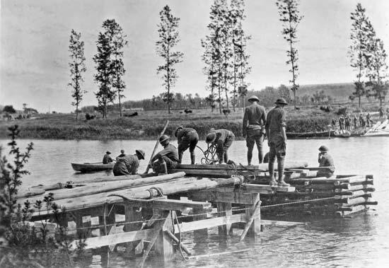
Doughboys build bridge over the Marne.
Second Battle of the Marne ends.
French cruiser "Dupetit Thouars" sunk by submarine in the Atlantic.
Vossuq ed Douleh appointed Persian Prime Minister
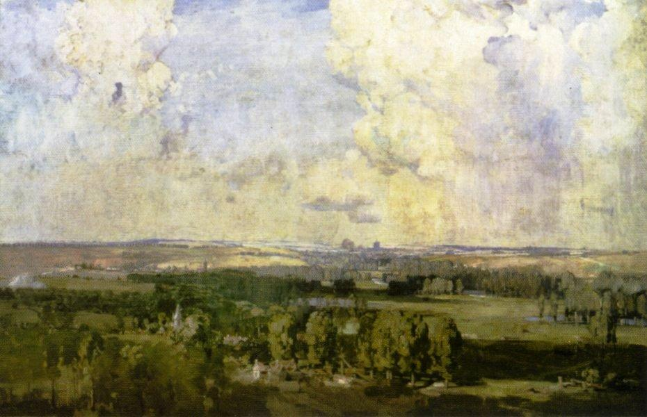
“Amiens, the key to the west” by Arthur Streeton, 1918.
Amiens Offensive (8th-12th): Battle of Amiens, first phase of the Hundred Days Offensive.
Hundred Days Offensive, last offensive on Western Front.
On August 8th, the advance of the Allies was successful.
British Government inform Finnish Government that they are in no way hostile to Finnish aspirations on the Murman Coast and in Karelia.
August 8, 1918 - Germans in the Somme experience the "Black Day of the German Army" as later described by General Ludendorff. This occurs as the British 4th Army using 456 tanks attacks German positions east of Amiens. Six German divisions quickly fall apart and 13,000 prisoners are taken during the rapid 7-mile advance. The attack is only slowed when the Germans rush in nine divisions, their last reserves on the Western Front.
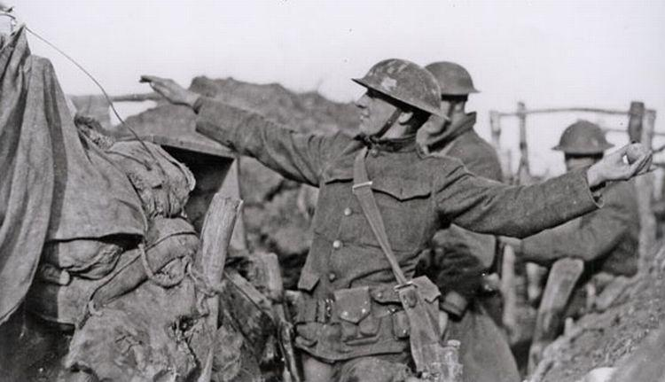
The Soldier’s Burden
Battle of Montdidier (9th – 12th)
The British continued their attack the next day with the Canadian Corps gaining another five kilometres. This brought British Fourth Army’s advance onto the wasteland of the old 1916 Somme battlefield, while eight German divisions were arriving to reinforce the defence. The French First Army captured Montdidier on 10 August. The fighting continued until 12 August with little further Allied gains, by which time losses and mechanical failures had reduced the British tank strength to six working tanks. With the Germans holding a new line in front of Noyon and Peronne, Field Marshal Haig closed the battle down and began preparing for another attack further north.
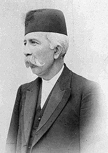
Mushaver ul Mamalek, Persian Foreign Minister, resigns. Reappointed on the 11th. Served as Prime Minister six times between 1910 and 1927.
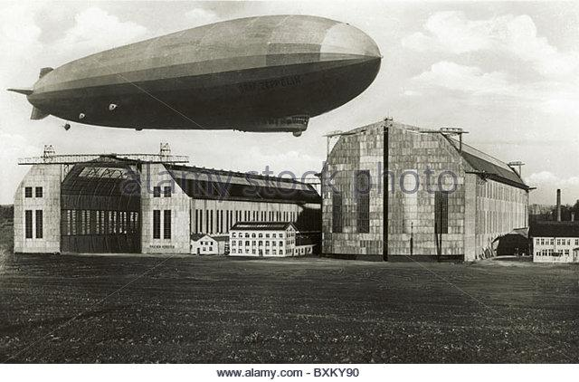
German airship “L. -53” destroyed off Frisian coast. (Last German airship to be destroyed.)
First Japanese contingents arrive at Vladivostok.
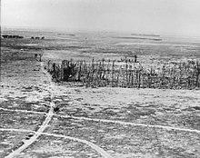
Oppy Wood from the air
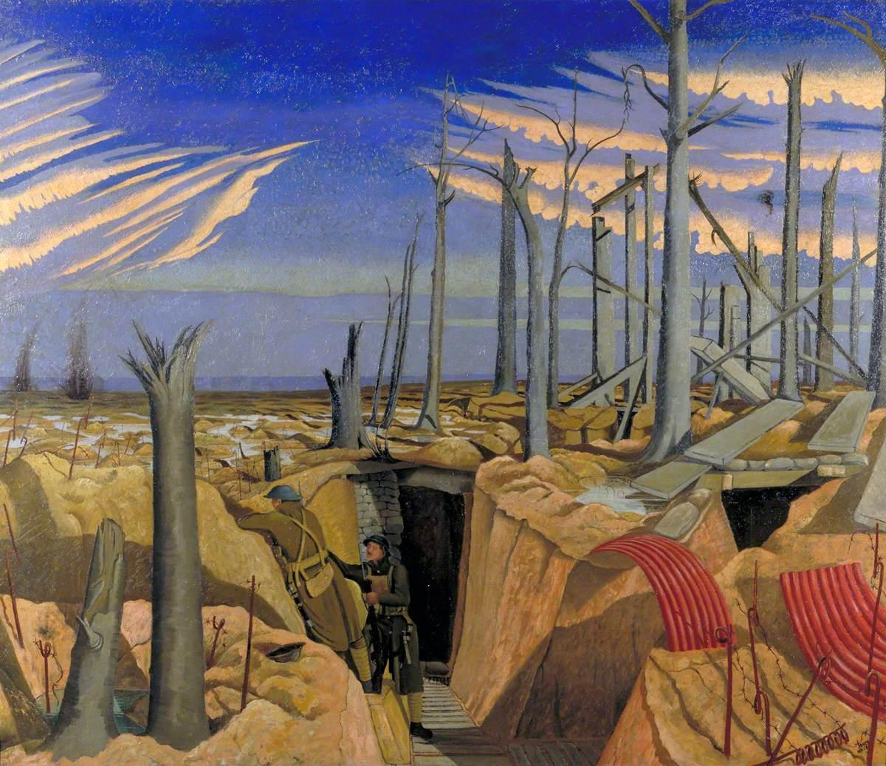
“Oppy Wood, 1917: Evening”, by John Northcote Nash, Imperial War Museum
The Czecho-Slovaks declare War on Germany as a people. On October 28th it repeats the Declaration as a belligerent nation. British Government immediately recognizes the Czecho-Slovaks as an Allied nation.
A series of attacks by British forces in May and June 1917 against a German held fortified wood near Arras in France that finally succeeded in dislodging the Germans.
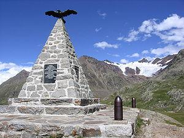
Memorial at the Gavia Pass
Battle of San Matteo (13th Aug – 3rd Sept.)
Italian alpine troops launched a surprise attack on the San Matteo peak in the Alps that was held by Austro-Hungarian troops and controlled the Gavia Pass (famous for being the highest point in the Giro d'Italia road bicycle race) between Venice and Switzerland. Half of the Austro-Hungarian unit was captured while the rest retreated off the summit. At an altitude of 2,800 metres, it was the highest battle ever fought until a battle during the Kargil War in 1999 between India and Pakistan was fought at 5,600 metres.
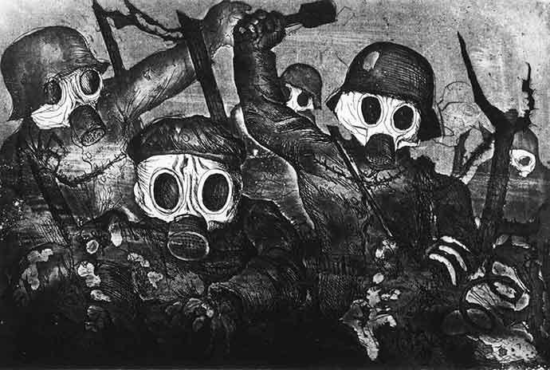
“Stormtroopers Advancing Under Gas”, by Otto Dix, (1924)
French flying ace René Fonck shot down three German aircraft in ten seconds in a head-on attack, with all three crashing within 100 meters (328 feet) of one another near Roye, Somme, France.
Admiral von Capelle, German Minister of Marine who had convinced the Kaiser to authorize the return of unrestricted submarine warfare at the start of the previous year, resigns. The resumption of the U-boat campaign against Britain would be one of the leading causes for American participation in the War.
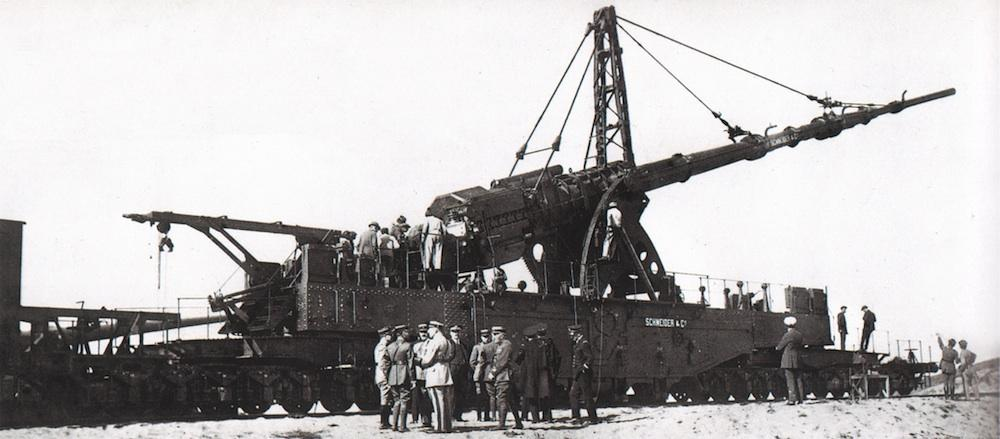
21cm / 24cm Paris-Geschutz (Paris Gun) Long-Range
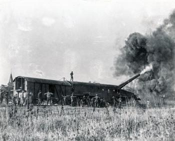
USA Navy 14-inch guns converted to railroad cannon.
Last bombardment of Paris by German long-range gun.
Action of Bairam Ali (Trans-Caspia): Trans-Caspian Government defeated by Bolshevik forces.
Vice-Admiral Behnke appointed German Minister of Marine.
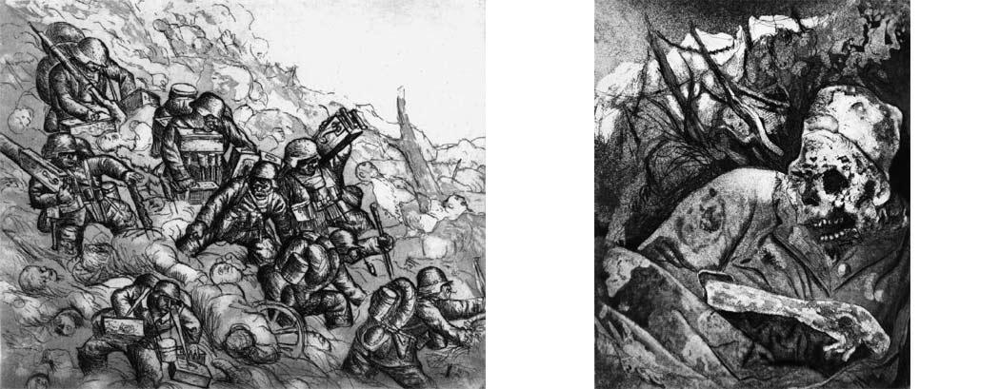
Machine Gunners Advancing (Left) and Corpse In Barbed Wire (Right) , by Otto Dix, (1924)
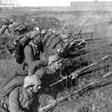
The Czechoslovak legions: myth, reality, gold and glory | Radio Prague
You'll read about the Czech Legion on a regular basis in the accounts of the 100 Last Days. But who were they and what were they doing in Russia? Read the whole story of this modern-day saga of Homeric proportions. It's the Iliad and Odyssey transported to the battlefields of WWI and the cities along the Trans-Siberian Railroad. Gold, murder, adventure and the cry for freedom. Echoing still a century later.
Battle of Lake Baikal – A Czechoslovak Legion force under command of Radola Gajda used two captured armed steamer ships to raid a Red Army port on Lake Baikal in Siberia. The Russian icebreaker SS Baikal was sunk in the attack, and the port's harbor and train station were shelled and destroyed. The victory was the only time Czech forces ever engaged in a naval battle.
Untitled work, by C. R. W. Nevinson
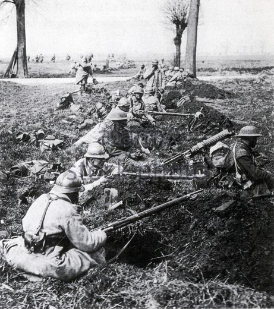
German infantry attack on Western Front, 2nd Battle of Noyon
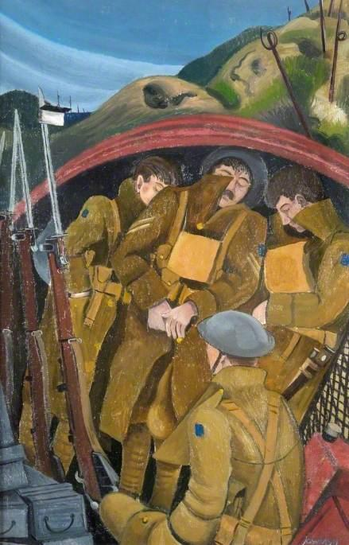
“An Advance Post: Day” by John Northcote Nash, Imperial War Museum
Second Battle of Noyon (17th – 29th) – The French Tenth Army attacked the German-held town of Noyon, France in an early offensive prior to the main Allied attack at Albert four days later.
Slovene National Council meets at Ljubljana (Laibach).
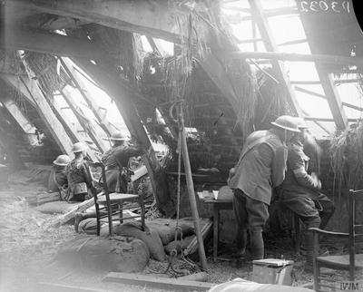
British artillery observers, Action of Outtersteene Ridge, track progress of a creeping barrage.
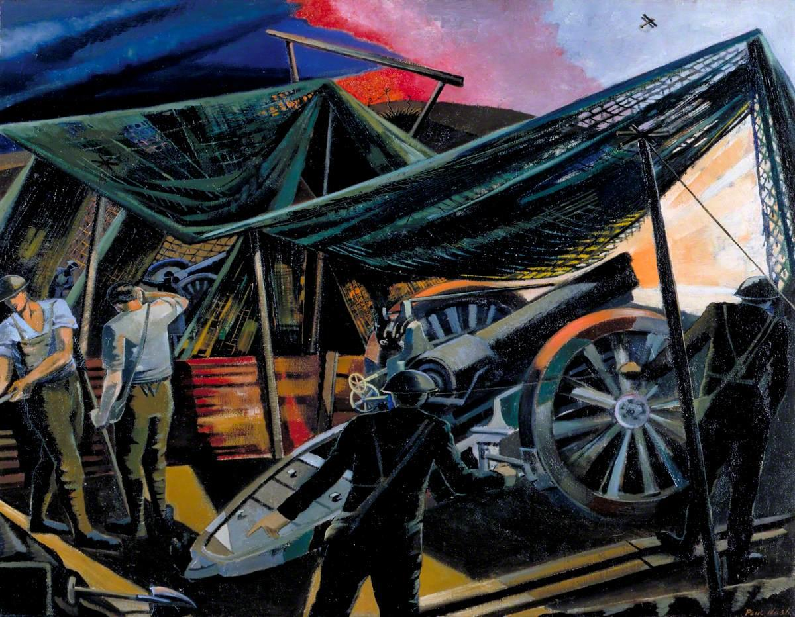
“A Howitzer Firing”, by Paul Nash, 1918, (Imperial War Museum)
Merv (Trans-Caspia) taken by Boleshevik forces.
British advance in Flanders begins: Action of Outtersteene Ridge.
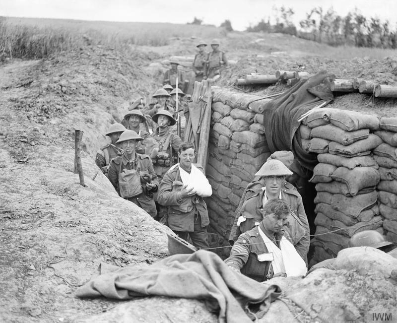
The Advance in Flanders --- the Long, Long Trail
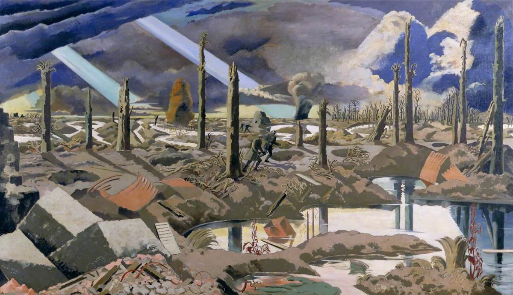
“The Menin Road”, by Paul Nash, (1919), Imperial War Museum
Merville retaken by British forces.
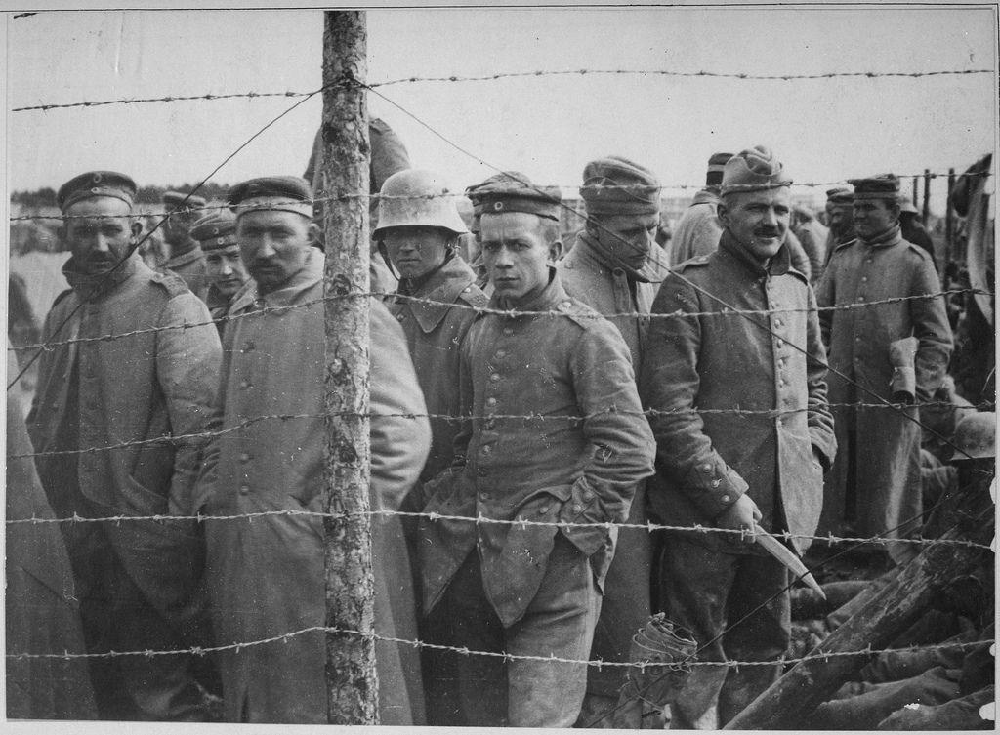
German prisoners in a French POW camp.
The French 10th Army takes 8,000 prisoners at Noyon and captures the Aisne Heights.
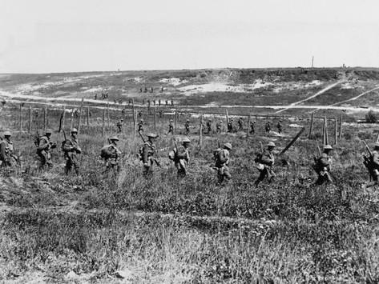
Third Battle of Albert
Allied breakthrough at Albert
Third Battle of Albert (21st – 22nd), opening phase of the Third Battle of the Somme
The British 3rd Army begins an attack along a 10-mile front south of Arras, while the adjacent 4th Army resumes it attack in the Somme, as the Germans continue to fall back.
Also the start of the second Battle of Bapaume (21st Aug – 3 Sept), another phase of the Third Battle of the Somme.
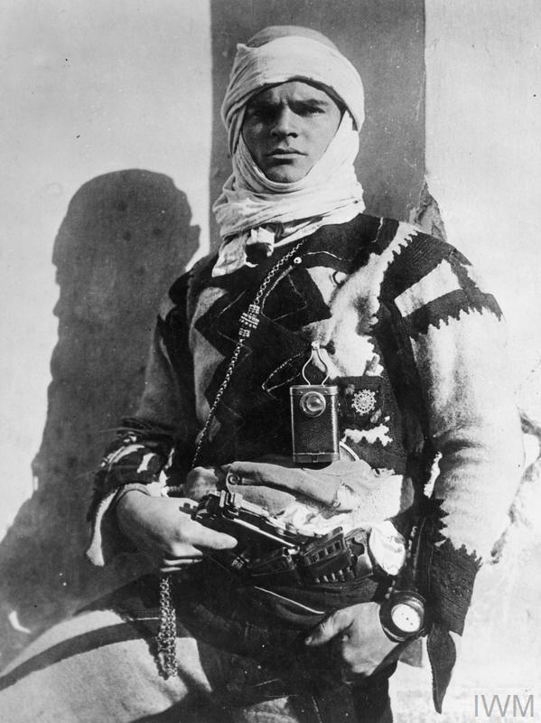
Member of the Austro-Hungarian Albanian Legion (hoping for a role as "Lawrence of Albania"?)
Austrian forces begin a counter-offensive in Albania against Italy, leading to their last victory in the war.
Albania had achieved independence two years before the start of WWI, at the end of the first Balkan War. Seen as weak and a religious anomaly because of its Muslim majority, it had been invaded and carved up from the start by all its Christian neighbors, Greece in the South, Serbia in the West (later replaced by Bulgaria after Serbia's demise against the Central Powers), Austria-Hungary in the North and Italy on the coast. Despite that it had not been an active front for most of the war.
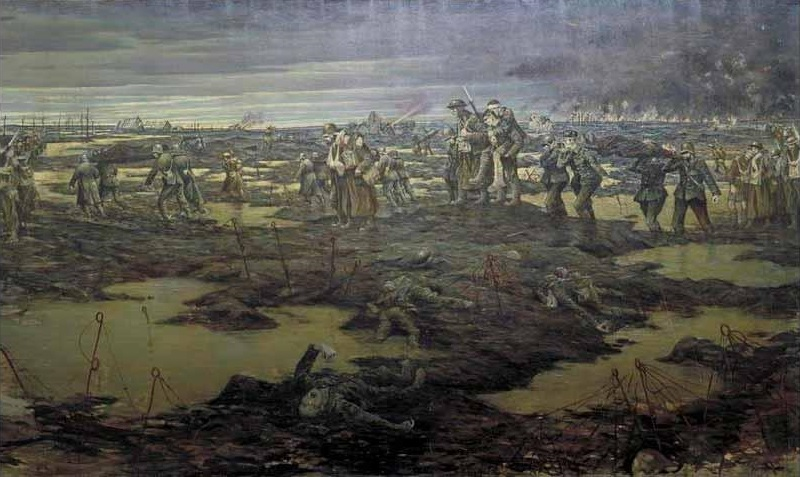
“The Harvest of Battle”, by C.R.W. Nevinson, (1918)
In the Battle of Bapaume (21 Aug. - 3 Sep.) all ridges east and south of the town of Bapaume have been captured by IV Corps, which includes a New Zealand Division at full strength. It would take three attempts before the town finally could be captured.
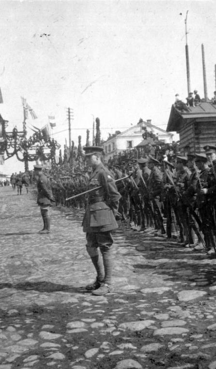
British Middlesex Regiment in Siberia, 1918.
Coup d’etat by General Horvat at Vladivostok.
Battle of Dukhovskaya (Eastern Siberia). Bolsheviks decisively defeated by Allied forces (Japanese, with one British battalion) during the Siberian Expedition, a part of the Allied Intervention in the Russian Civil War.
The goals of the Allied Intervention initially were to provide safe passage for the Czechoslovakian Legion through Siberia to Vladivostok from where they could be evacuated to France, and prevent the Germans from seizing the caches of weapons supplied to the Russians by the Allies after Russia pulled out of the War. The fear that the success of a communist revolution might spread to other countries however soon changed this into a fight against the Bolsheviks and their Red Army, either directly or by supporting the various "White" armies that favored a return to imperial rule.
For their part the Japanese wanted to create a buffer state in Siberia to solve their "Northern problem", just as they would do more successfully in Manchuria over a decade later. For this reason they assigned 70,000 soldiers to the Expedition, 10 times more than what the Americans and British had demanded, and kept them under their own command. Suspicion as to each other's intentions eventually doomed the whole enterprise.
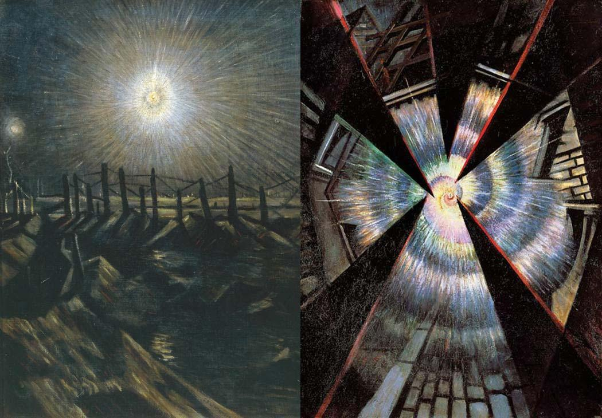
“A Star Shell (Left, 1916) and Bursting Shell (Right, 1915)”, by C.R. W. Nevinson
Second Battle of Bapaume - New Zealand forces began battling the Germans block by block in the French town of Bapaume, but failed to dislodge them.
Star shell - A type of ammunition shell which bursts to release a shower of stars for illuminating enemy positions, etc.
Shell shock - A term coined in World War I to describe the type of posttraumatic stress disorder many soldiers were afflicted with during the war (before PTSD itself was a term). It is a reaction to the intensity of the bombardment and fighting that produced a helplessness appearing variously as panic and being scared, flight, or an inability to reason, sleep, walk or talk. Initially thought to be caused by the exposure to exploding artillery shells, but later revised as it also occurred in other situations.
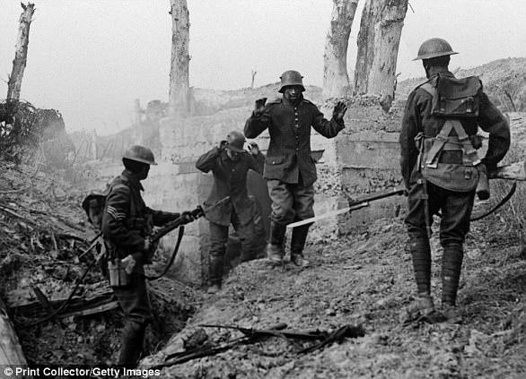
German soldiers surrendering in Bullecourt during the Battle of Arras.
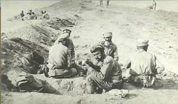
Battle of Baku shortly before the Ottoman attack: Russian and Armenian soldiers near the front line.
Fourth Battle of Arras (also known as Second Battle of Arras (19188)) (26 Aug – 3 Sept), a phase of the Second Battle of the Somme.
Fourth Battle of the Scarpe (also known as Battle of the Scarpe (1918)), a phase of the Fourth Battle of Arras. The Canadian Corps broke through the German line and advanced five kilometers, capturing the French towns of Monchy-le-Preux and Wancourt.
Battle of Baku (26 Aug – 14 Sept), last Turkish offensive of the war. The Islamic Army of the Caucasus launched a major attack on the Allied-occupied city of Baku, Azerbaijan, that proved successful.
Berat (Albania) retaken by Austrian forces.
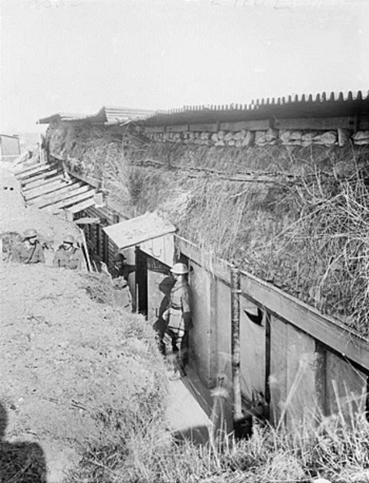
A.S.C. Officer outside a former German Dug out at Roye, 15 March 1918. It had a 10ft. concrete roof.
Roye recaptured by British forces. Roye was abandoned to the French in March 1917 and retaken by the Germans on 26 March 1918.
British force occupies Krasnovodsk on Caspian Sea.
German and Russian Bolshevik Governments conclude complementary treaty of peace.
Battle of Ambos Nogales – U.S. troops with the 35th Infantry Regiment skirmished against Mexican Carrancistas and their German advisers at the border town of Nogales, Arizona. As German military officers were involved, it was considered the only battle of World War One fought on American soil.
“The Void of War” by Paul Nash, (1919)
North Russia Intervention, part of the Allied Intervention in the Russian Civil War – A British attempt to invade Russian-held territory in East Karelia (located between Russia and Finland) failed with the loss of three dead and 18 wounded.
“The Kensingtons at Laventie, Winter 1914, by Eric Henri Kennington (1915)
Second Battle of the Somme – The French Tenth Army captured Noyon, France from the Germans.
Second Battle of Bapaume – New Zealand forces launched a general attack on Bapaume, France and finally drove the Germans out of the town.
Battle of the Scarpe – Brutinel's Brigade, the first fully mobilized British unit, pushed the German line back another kilometer while Canadian forces began setting up posts right on the banks of the Scarpe River.
Battle of Baku – Ottoman troops captured key defensive positions around Baku, Azerbaijan but heavy losses slowed plans to take the city itself, allowing the defending Allies time to regroup.
The Communist Party of Finland was established after the Reds were defeated in the Finnish Civil War, but the party remained illegal in the country until 1944.
Gurue landscape, artist unknown, with similar terrain as Liomba
Battle of Lioma (30 – 31 Aug) in Portuguese East-Africa (present-day Mozambique) during the East-African Campaign between the German Schutztruppe under Paul von Lettow-Vorbeck and the British King's African Rifles. The Germans, aided by the terrain, avoided encirclement and narrowly escaped, continuing their trek back to German East-Africa.
Bailleul retaken by British forces.
Lt.-Gen. Sir C.F.N. Macready, Adjutant-General, Home Forces, Great Britain, resigns. He famously abolished the obligation for every man in the army to wear a moustache and was the first to shave it off himself. He would later lead the British forces during the Irish War of Independence.
The Scottish Women’s Hospital: In the Cloister of the Abbaye at Royaumont, Dr Frances Ivens Inspects a French Patient (1920), by Norah Neilson Gray
Captain (Acting) Francis Newton Allen Cromie, CB, DSO
Battle of Mont Saint-Quentin – The Australian Corps under command of John Monash crossed the Somme River and captured the German-held hill of Mont Saint-Quentin in France.
As the Red Terror ramped up, Cheka agents stormed the British embassy in Petrograd on suspicion counterrevolutionary organizations were using resources within it. In the ensuing raid, British naval officer Francis Cromie was shot and killed by Cheka agents and another 40 were arrested on suspicion of collaborating with counterrevolutionaries. The British government shut down the embassy days later and ordered the diplomatic staff to Finland.

|
Larry Peery (peery@ix.netcom.com) Mario Huys (woelpad@gmail.com) |